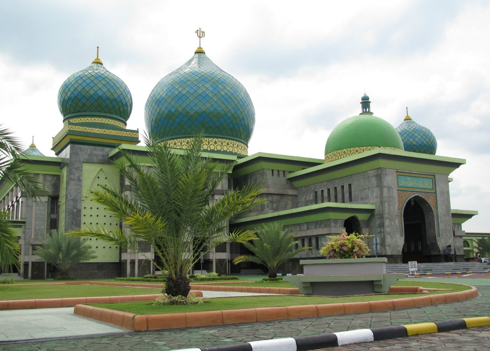

Kronologi

(Sumber : id.wikipedia.org/wiki/Masjid_Agung_An-Nur )
Masjid Annur adalah megah yang memadukan arsitektur gaya Melayu, Arab, Turki dan India.
Masjid Agung An Nur disebut sebagai Taj Mahal-nya Pekanbaru. Bangunan utamanya yang berukuran simetris 50 x 50 meter dengan sebuah kolam besar dan air mancur tepat di depannya membuat masjid ini mirip dengan Taj Mahal di India.